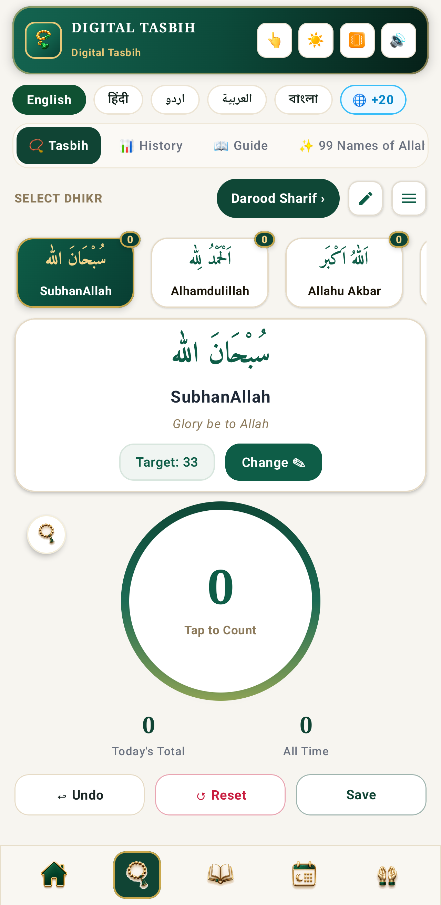
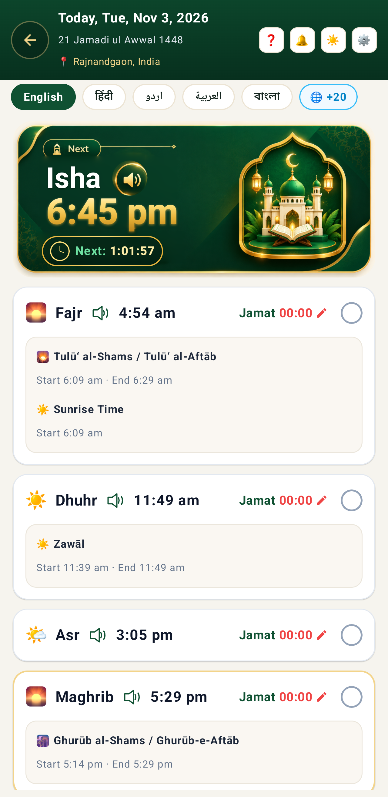
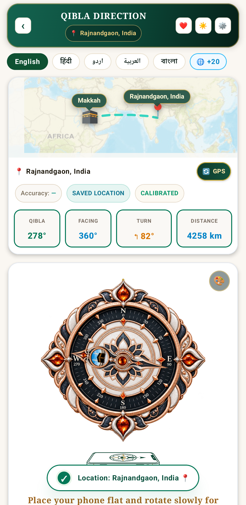
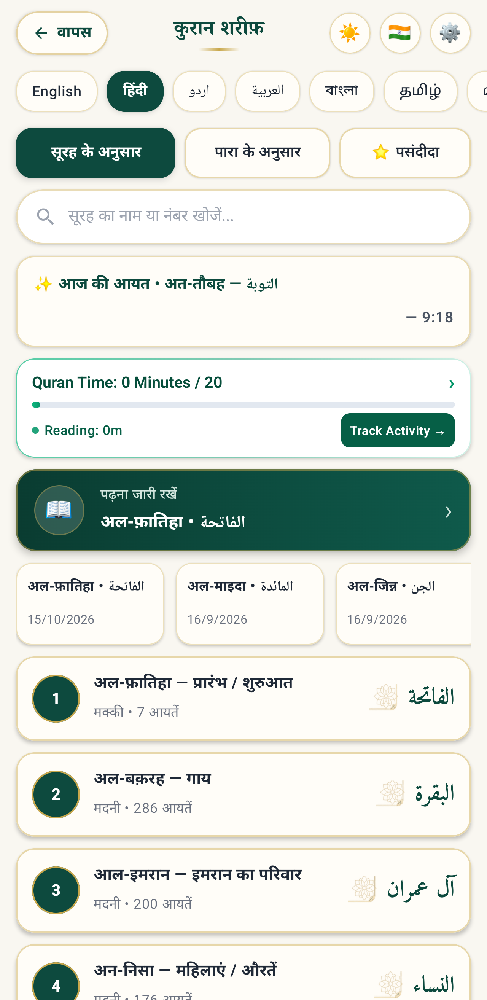
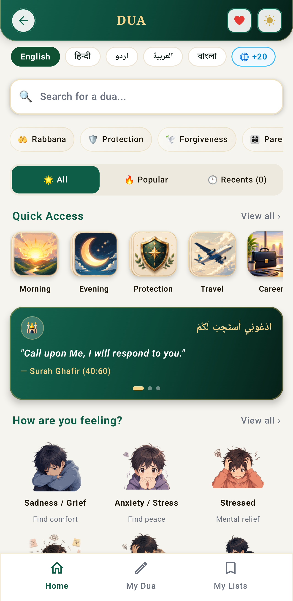
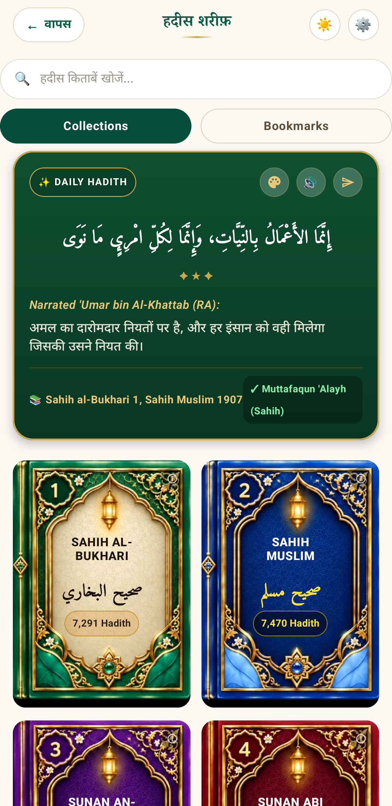
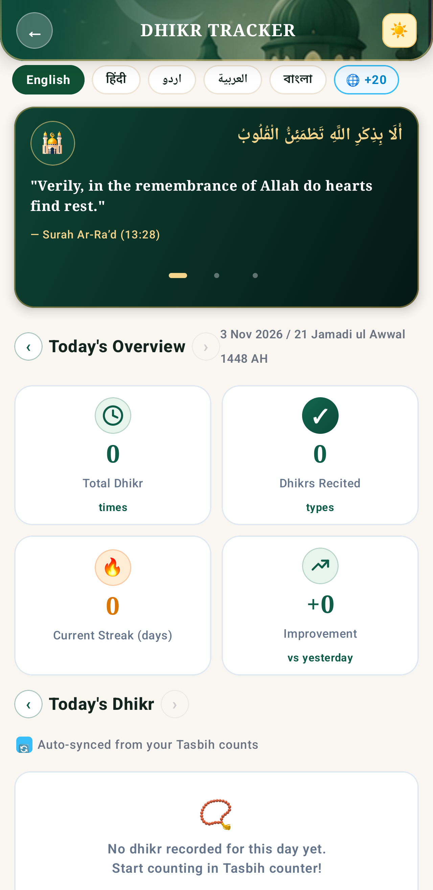
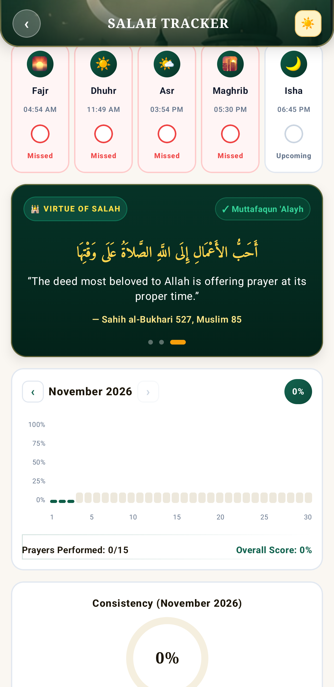
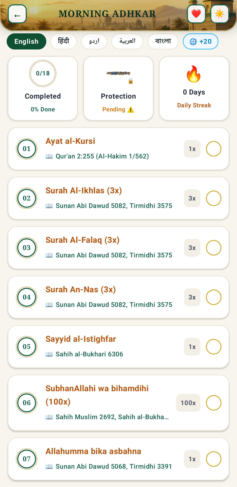
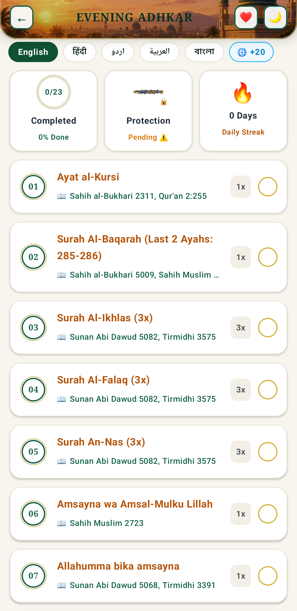

01 · KNOW WHAT’S NEXT
Your day, at a glance.
See the next prayer and the rest of today’s timings without losing the wider rhythm of your day.
Imaanix is a technology company creating a growing suite of purposeful Islamic apps—designed to make everyday life simpler, more connected, and more meaningful.
To create meaningful and reliable Islamic digital products that enrich lives and strengthen faith.
To be a leading global publisher of high-quality Islamic apps, inspiring millions on their spiritual journey.
A growing collection of Islamic apps, designed with care and built for you.
We craft intuitive and beautiful experiences for our users.
We uphold the highest standards of quality, privacy and reliability.
Our apps are designed to be a part of your daily life.
Thoughts, updates and inspiration from Imaanix.
Thoughtful reads on faith, technology, and building digital experiences that make everyday moments a little better.
Partner with us to create innovative Islamic apps for a more connected world.
Last updated: November 2026. Applies to Imaanix, its website and apps including Digital Tasbih.
Imaanix ("we", "us") develops mobile apps and digital products. This policy explains how we handle information when you use our apps and website.
To provide and improve our apps, save your progress and show live counts, fix bugs, keep the apps secure, and show ads that help keep our apps running.
We do not sell your personal information. We may share limited data with trusted providers (hosting, analytics, advertising) who help us operate the apps, or when required by law.
Campaign counters and related data may be stored on secure servers. We use reasonable safeguards, but no method of storage or transmission is completely secure.
You can use many features without personal details. You may reset your advertising ID in device settings and can request access to or deletion of your data by contacting us.
We do not knowingly collect personal information from children under 13 without parental consent. If you believe a child has shared data with us, contact us and we will remove it.
Our apps may use Google Play Services, Firebase and Google AdMob, which have their own privacy policies.
We may update this policy. The latest version will always be on this page with the updated date.
Email business@imaanix.in for privacy questions or data requests.
We create thoughtful digital experiences and apps that make everyday life simpler and more meaningful. If you care about useful products, thoughtful design, and work that makes a difference, we’d love to meet you.
We’re not hiring at the moment. As Imaanix and our family of apps grow, new opportunities will be listed here. Check back soon.
When a role is available, it will appear with its team, work type, location, a short description, and application details.
Help shape clear, welcoming experiences across the Imaanix app family.
Application link will appear hereRead the role details to see what the team needs and how you could contribute.
Use the application link on the opening to share your details and work.
If there’s a fit, our team will reach out with the next steps.
Send your message directly to the Imaanix team.
Digital Tasbih brings everyday Islamic tools into one calm, considered app—so it is easier to keep your prayers, remembrance and reading close throughout the day.
Explore each part of Digital Tasbih. Every feature has its own page with the real app screens and a closer look at how it works.

A calm space for every count.
Explore feature
Your salah schedule, clearly in view.
Explore feature
Find your direction with confidence.
Explore feature
A welcoming place to continue your Quran reading.
Explore feature
Words for every feeling, gathered in one place.
Explore feature
A moment to read, reflect, and remember.
Explore feature
A clearer picture of your dhikr, day by day.
Explore feature
Make space to reflect on your salah routine.
Explore feature

A thoughtful rhythm for morning and evening.
Explore featureFrom a quiet moment of dhikr to checking the next prayer, Digital Tasbih brings useful Islamic tools together in a clear experience. Open the feature you need, find your place, and carry on at your own pace.
Questions or feedback about Digital Tasbih? We would love to hear from you.
Begin and close your day with dedicated morning and evening adhkar. Clear Arabic, readable meanings, repetition counts, and session progress help you move through each remembrance with focus.
Dedicated morning and evening collections bring each dhikr, its repetition count, and your progress into a calm, easy-to-follow reading flow.
Part of Digital Tasbih by Imaanix. Explore the other app tools below whenever you need them.
Turn your remembrance into a routine you can reflect on. Review your dhikr totals, weekly and monthly activity, streaks, and the times you practise most.
Review daily, weekly, monthly, and yearly activity, along with streaks, averages, and frequently recited dhikr. The tracker is a gentle reflection tool to help you stay mindful of your own practice.
Part of Digital Tasbih by Imaanix. Explore the other app tools below whenever you need them.
Explore 200+ duas for the moments that matter. Browse by feeling, need, or category, read available meanings in your chosen language, and return to the supplications you want to keep close.
With 200+ duas, meaningful categories, search, language options, bookmarks, sharing, and personal collections, it is easier to find a supplication that speaks to your moment and keep it close for later.
Part of Digital Tasbih by Imaanix. Explore the other app tools below whenever you need them.
Read a daily Hadith with its reference, explore collections, and save narrations you want to revisit. Clear reading and listening controls make it easy to pause, reflect, and return.
Each narration is presented with its available reference. For interpretation or complete context, consult the cited source and qualified scholarship.
Part of Digital Tasbih by Imaanix. Explore the other app tools below whenever you need them.
Finding your location…
See today’s prayer times in the app’s familiar screen. Find the next salah, follow your daily prayer routine, and keep the details you need in one calm view.
Keep the daily schedule close, then check in with your routine when the time comes.
See the next prayer and the rest of today’s timings without losing the wider rhythm of your day.
Use the app’s prayer tools to keep your routine visible and return to it with intention.
Prayer times are just the beginning. Digital Tasbih brings purposeful Islamic tools together for the everyday moments that matter.
See the next prayer and a live countdown, with your day’s times in one clear view.
Check all seven days at a glance and keep changing prayer times close at hand.
Use your location or search a city, then select a calculation method and Asr convention.
Explore the Digital Tasbih app for prayer schedules, reminders, a Qibla compass, Quran reading, duas and daily remembrance.
Seven days for the location you selected, with today clearly marked.
| Date | Fajr | Sunrise | Dhuhr | Asr | Maghrib | Isha |
|---|---|---|---|---|---|---|
| Choose a location above to load the seven-day schedule. | ||||||
Prayer times can differ by calculation method and local mosque adjustments. Check the method above and follow your local mosque or authority where its timetable differs. About calculation methods →
Find the direction of the Kaaba with a dedicated Qibla compass. Use your location for guidance, view your bearing and distance, and follow the on-screen calibration prompts for a steadier reading.
Digital compass readings can be affected by nearby metal or electronics. Keep location access on, move your phone in the calibration motion shown in the app, and use the displayed bearing as your guide.
Part of Digital Tasbih by Imaanix. Explore the other app tools below whenever you need them.
Find a surah, continue from where you left off, and build a steady Quran reading habit. Search, bookmarks, recents, reading activity, and language options help keep your reading journey close at hand.
Search by surah, explore by juz, revisit recent reading, and keep your daily goal and last-read place close—so it is easy to return to the Quran whenever you are ready.
Part of Digital Tasbih by Imaanix. Explore the other app tools below whenever you need them.
Keep a simple record of your daily salah. Mark prayer check-ins, follow your streak, and review monthly patterns and per-prayer progress in one calm view.
Mark daily prayer check-ins, follow your streak, and explore monthly charts and individual prayer summaries. A private, straightforward way to reflect on your routine—without pressure.
Part of Digital Tasbih by Imaanix. Explore the other app tools below whenever you need them.
Make room for focused remembrance. Choose a dhikr, set a personal target, and keep your current count, today’s total, and all-time progress together.
A focused counter with your chosen dhikr, Arabic and meaning, personal target, current count, today’s total, and all-time total. Save a session, revisit your history, or explore the guide and 99 Names of Allah whenever you want.
Part of Digital Tasbih by Imaanix. Explore the other app tools below whenever you need them.
Developer & Publisher: Imaanix
Effective Date: November 03, 2026
Last Updated: November 03, 2026
Digital Tasbih, developed and published by Imaanix ("Imaanix", "we", "our", or "us"), is an authentic Islamic spiritual companion app designed with the sacred principle of Amanah (trust & transparency).
This Privacy Policy outlines how Imaanix handles your information when you download and use Digital Tasbih from the Google Play Store.
We comply with global privacy standards, including:
For regular daily use, Digital Tasbih operates as a private, client-side utility:
Digital Tasbih offers optional communal features: Live Dhikr (where users participate together in collective tasbih) and Special Community Campaigns (occasional spiritual milestones and rewarding contests).
When you participate in a Live Dhikr room or community campaign, other participants can ONLY see:
In designated special campaigns or community giveaway competitions, users may voluntarily provide their mobile phone number:
To ensure fair spiritual participation and protect community contests against spam and auto-clickers, Imaanix employs fair-play protection mechanisms:
Imaanix applies rigorous, modern security measures to safeguard all campaign data and interactions:
To offer the Digital Tasbih app completely free to millions of users worldwide, Imaanix partners with reliable, privacy-certified third-party services:
Imaanix maintains a strict and uncompromising policy regarding user data:
You have total control over your data:
Digital Tasbih by Imaanix is a family-safe Islamic education and worship tool suitable for users of all ages. We do not knowingly collect personal information from children under the age of 13 (or under 16 in the EEA).
For any privacy questions, feedback, or inquiries regarding this Privacy Policy or any services provided by Imaanix, please contact us:
Send your message directly to the Imaanix team.
Use Digital Tasbih lawfully and respectfully. The app provides worship, reference, and utility features; availability and content may change. You remain responsible for content you submit to community features.
Prayer schedules, Hijri dates, location estimates, and Qibla direction can vary with settings, calculation methods, device accuracy, network availability, and local authorities. Verify important information with trusted local sources. App content is not a substitute for qualified religious guidance or professional advice.
We aim to keep the service useful but do not warrant uninterrupted or error-free operation. To the extent permitted by applicable law, Imaanix is not liable for indirect or consequential loss from reliance on the service. Nothing here limits rights that cannot lawfully be excluded.
For questions contact support@imaanix.in.
Use Digital Tasbih lawfully and respectfully. The app provides worship, reference, and utility features; availability and content may change. You remain responsible for content you submit to community features.
Prayer schedules, Hijri dates, location estimates, and Qibla direction can vary with settings, calculation methods, device accuracy, network availability, and local authorities. Verify important information with trusted local sources. App content is not a substitute for qualified religious guidance or professional advice.
We aim to keep the service useful but do not warrant uninterrupted or error-free operation. To the extent permitted by applicable law, Imaanix is not liable for indirect or consequential loss from reliance on the service. Nothing here limits rights that cannot lawfully be excluded.
For questions contact support@imaanix.in.
Essential browser or device storage may remember preferences or support core functions. The app may store settings and personal progress locally. Optional third-party services, if enabled, may use identifiers under their own policies and applicable consent controls.
You can manage browser storage and device permissions in your settings; blocking essential storage may affect functionality. See the Digital Tasbih Privacy Policy or email support@imaanix.in.
Use Digital Tasbih lawfully and respectfully. The app provides worship, reference, and utility features; availability and content may change. You remain responsible for content you submit to community features.
Prayer schedules, Hijri dates, location estimates, and Qibla direction can vary with settings, calculation methods, device accuracy, network availability, and local authorities. Verify important information with trusted local sources. App content is not a substitute for qualified religious guidance or professional advice.
We aim to keep the service useful but do not warrant uninterrupted or error-free operation. To the extent permitted by applicable law, Imaanix is not liable for indirect or consequential loss from reliance on the service. Nothing here limits rights that cannot lawfully be excluded.
For questions contact support@imaanix.in.
Search for an answer or browse the guides below. Searching and choosing a category are optional.
The core tools—including Tasbih, Quran, duas, Qibla, trackers, and adhkar—are available without creating an account or setting a password. Optional community features may have their own participation steps.
Open Tasbih, choose a dhikr from the options on screen, then set the target that suits your practice. Tap the central counter to count; use Undo or Reset if needed, and save a session to revisit it in History.
Open Duas and browse the available categories or use search to find a supplication for your moment. The library contains 200+ dua entries, with Arabic and available meanings and language options.
Yes. Use the save control to keep a dua handy, share it from its screen, or organise saved supplications into your own collections.
Open The Holy Quran and use the last-read or recent chapters area, or search and browse by surah and juz. Reading activity and daily goals help you keep your place.
Open a narration to see its displayed source or reference. For full context and interpretation, consult the cited source and qualified scholarship.
Choose the morning or evening collection, follow the displayed repetition counts, and use the progress indicator to move through the session at your own pace.
Dhikr Tracker summarises recorded activity with daily totals, trends, streaks, and history. Salah Tracker lets you mark daily prayer check-ins and review your routine in monthly and per-prayer summaries.
Times can vary by selected city, calculation method, and local convention. Check your location and calculation settings on the Prayer Times page, then compare with a trusted local mosque or authority for the schedule you follow.
You can search for a city on the Prayer Times page, or allow location access when your browser asks. If access is denied, use city search; location permission is not required for the Tasbih counter and other basic tools.
Make sure your location is available, move away from magnets or large metal objects, and follow the calibration motion shown in the app. Compass sensors can vary by device; use the displayed bearing as a guide.
Personal worship progress is stored locally on your device. It may not transfer automatically to another phone, and clearing app storage or reinstalling can remove local records. Keep your current installation if you need to retain that history.
Close and reopen the app, check that it is up to date, and confirm the relevant permission if the feature needs one—such as location for location-based guidance. If the issue continues, contact support and include your device model, Android version, the screen name, and what happened. Please do not send passwords or sensitive personal information.
No matching guides found. Try a different search, or contact support.